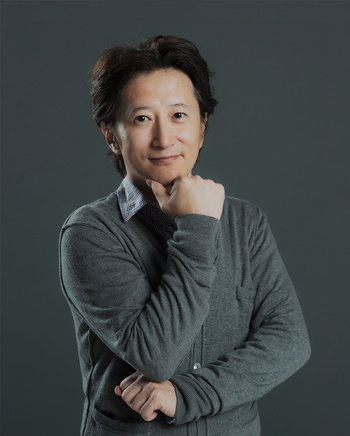

Japanese logo
Jojo's Bizarre Adventure is a manga series written and illustrated by Hirohiko Araki. The series was published in "Weekly Shonen Jump!" from 1987 to 2004, before moving to the monthly seinen manga magazine in 2005. The story currently has 8 parts, all of them following a new protagonist with the nickname "Jojo". The manga is known for its incredible art style, characters, and of course, the memes.
The series has sold more than 100 million copies to date. making one of the bestselling manga of all time. The series also started a media franchise with one-shot manga, light novels, and video games.
Hirohiko Araki
A 13 episaode OVA was produced by A.P.P.P. based on the series's third part "Stardust Crusaders" from 1993 to 2002. The studio later released an animated film of the first part "Phantom Blood", which released to theaters in 2007. In 2012 an anime produced by David Production was broadcasted in Japan with the first season adapting both "Phantom Blood" and the series second part "Battle Tendency". David Productions has continued adapted the manga and has animated through part 5 "Golden Wind". All adaptations have been released to critical acclaim. A live action adaptation of the fourth part "Diamond is Unbreakable" was released in 2017. That's all there is to say about that one.